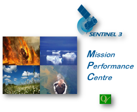
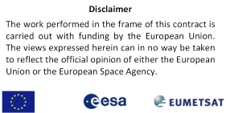

| Sentinel-3 L1C SYN Tool - Introduction |
|
The current Sentinel 3 ground segment includes a synergy branch where Level 1b data from two instruments onboard
Sentinel 3, namely OLCI and SLSTR, are commonly processed to a Level 2 product, containing aerosol and surface
reflectance data.
User demand showed that there is an additional need to obtain a product where the two Level 1b data streams
(TOA radiances or reflectances) are merged and collocated, and which allows them to perform an individual
Level 2 processing. This product is called Level 1C Synergy. The tool provided here performs the necessary
co-registration of the data.
ESA and the Copernicus program are providing Sentinel-3 Level-2 Synergy data [1][2] to the users. But users would like to have the data at Level-1 and process their own Level-2 data. Therefore ESA decided to provide a tool to the users instead of providing a predefined L1C file. This allows users to tailor the L1C product to their needs. The S3 L1C SYN Tool can create a L1C data product considering various user options. For example different collocation/co-registration algorithms, selection of bands to be included, reprojecting to a map and subsetting to certain regions.
|  |  |